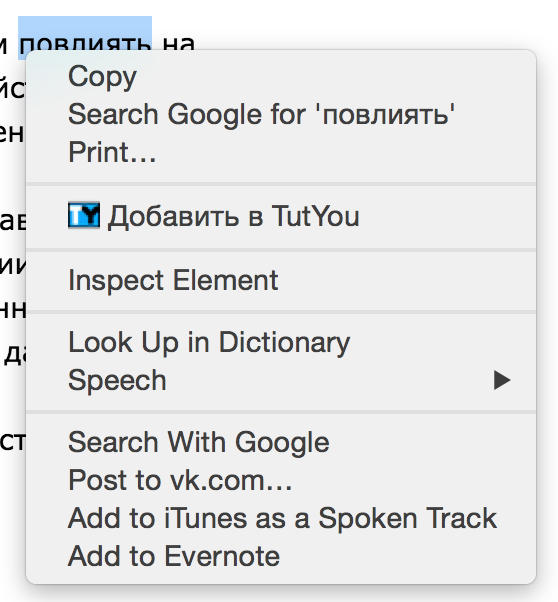
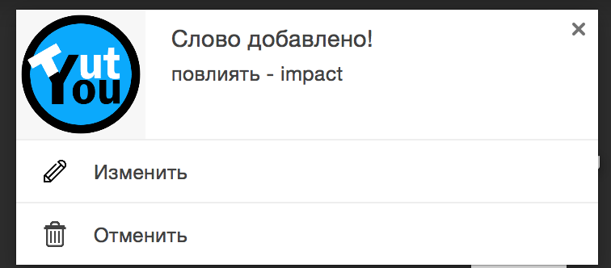
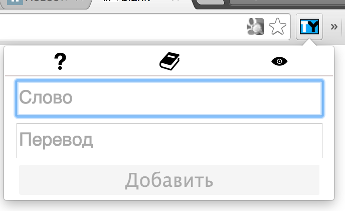
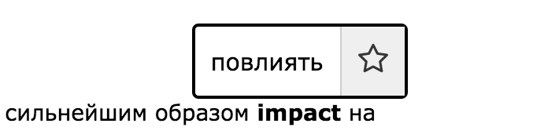
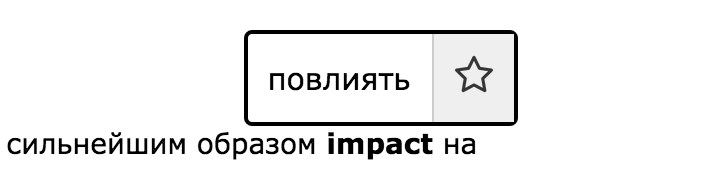
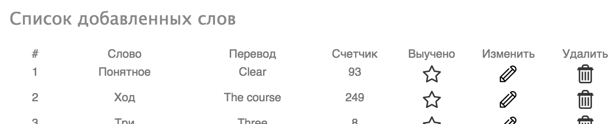
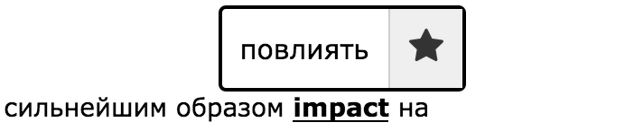

Как добавить слово?
Из текста |
Вручную |
| Выделите слово на странице, которое хотите добавить и нажмите правую кнопку мыши.  В выпавшем меню нажимите на "Добавить в TutYou". Слово автоматически добавится вам в словарь:  Если вам не нравится автоматический перевод - нажмите кнопку "Изменить". Если вам не хочется добавлять это слово - нажмите кнопку "Отменить". Обновите страницу, что бы увидеть изменения. | Нажмите на значок TutYou на верхней панели.  Введите слово и перевод, затем нажмите добавить. Обновите страницу, что бы увидеть изменения. |
Как увидеть добавленные слова?
В тексте |
В словарике |
Добавленные слова в тексте выделены жирным кеглем:
 При наведении на переведенное слово, можно увидеть оригинальное:

При наведении на переведенное слово, можно увидеть оригинальное:

| Нажмите на значок TutYou на верхней панели. Затем на ярлык-книжечку, что бы попасть в словарик:  |
Как отключить перевод?
Одного слова на всех сайтах |
Всех слов на одном сайте |
|
Если вы уже выучили слово, и не хотите, что бы оно повлялось -
наведите на слово и нажмите звездочку:

Обновите страницу, что бы увидеть изменения. Также вы можете удалить слово из словарика: | Нажмите на значок TutYou на верхней панели. Затем на ярлык-глазик. На всех страницах этого сайта слова больше не будут переводиться. |